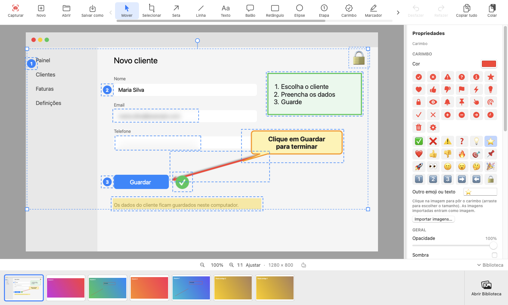
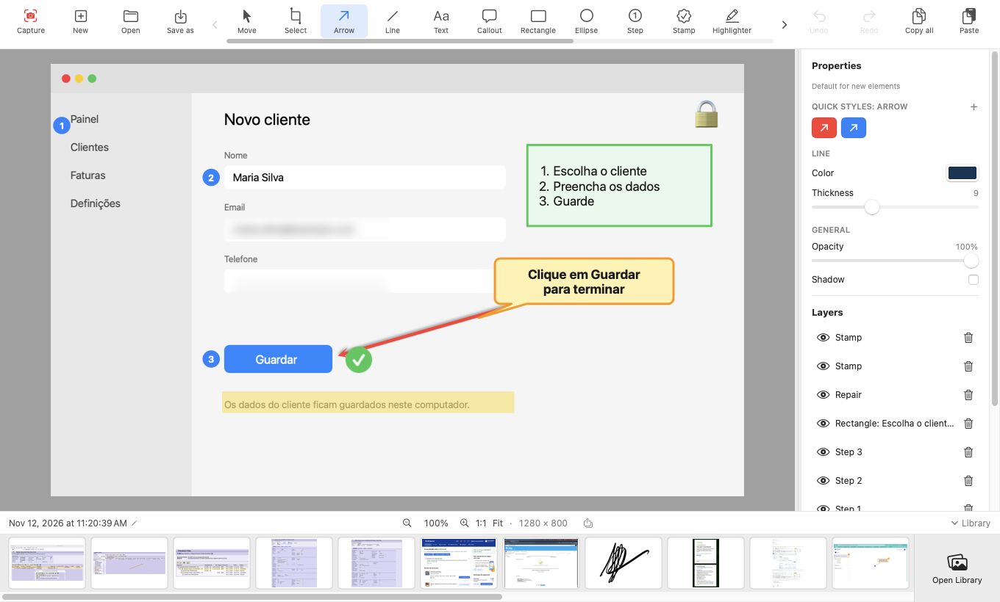
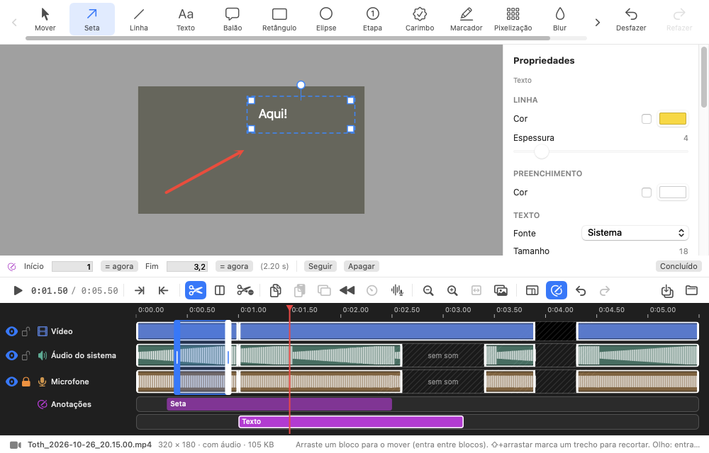
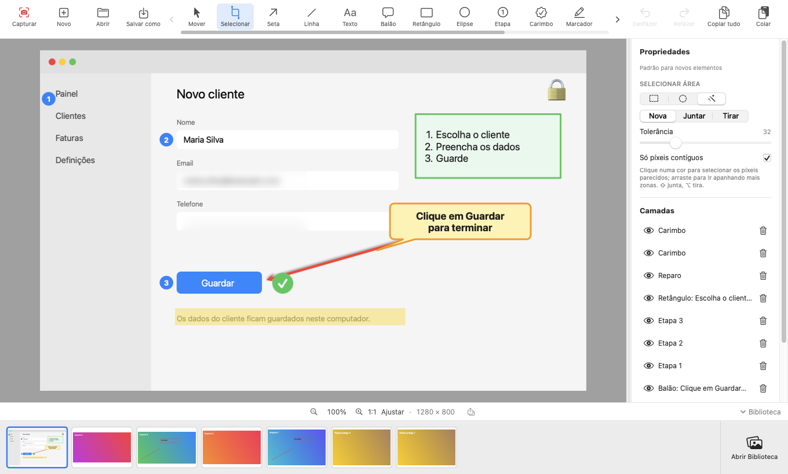

T O T H
Captura. Anota. Grava. Edita.Capture. Annotate. Record. Edit.
Uma só app para o Mac que faz o trabalho de quatro, inteiramente no seu computador. Sem conta, sem nuvem, sem telemetria. Software livre (MIT). One Mac app that does the work of four, entirely on your computer. No account, no cloud, no telemetry. Free software (MIT).
macOS 15 ou superior · Apple Silicon e Intel · versão 0.6.0macOS 15 or later · Apple Silicon and Intel · version 0.6.0


🧩 Uma app em vez de quatro🧩 One app instead of four
Capturar, anotar, gravar e editar vídeo costumam viver em apps diferentes, cada uma com a sua licença e a sua nuvem. O Toth junta as quatro tarefas numa só, e o que sai de uma entra diretamente na seguinte. Capturing, annotating, recording and editing video usually live in different apps, each with its own license and its own cloud. Toth puts the four tasks in one, and what comes out of one goes straight into the next.
| TarefaTask | Normalmente precisa de…Usually takes… | Toth |
|---|---|---|
| 📸 CapturarCapture | uma app de capturas (região, janela, página por rolagem) — Shottr, CleanShot X, Snagit…a screenshot app (region, window, scrolling page) — Shottr, CleanShot X, Snagit… | ✓ |
| ✏️ AnotarAnnotate | um editor de anotações (setas, texto, etapas, pixelização, reparo) — Skitch, Monosnap…an annotation editor (arrows, text, steps, pixelate, repair) — Skitch, Monosnap… | ✓ |
| 🎥 GravarRecord | um gravador de ecrã (área ou janela, áudio do sistema, microfone) — QuickTime, Kap, Loom…a screen recorder (area or window, system audio, microphone) — QuickTime, Kap, Loom… | ✓ |
| ✂️ Editar vídeoEdit video | um editor de vídeo (cortes, anotações com tempo, música, narração, GIF) — iMovie, ScreenFlow…a video editor (cuts, timed annotations, music, narration, GIF) — iMovie, ScreenFlow… | ✓ |
| 🔒 PrivacidadePrivacy | confiar que nada sai do computadortrusting that nothing leaves the computer | 100 % local100% local |
| 💶 PreçoPrice | três ou quatro licençasthree or four licenses | Gratuito · MITFree · MIT |
O Toth cobre o essencial de cada tarefa; não tem legendas automáticas, efeitos nem transições, e não partilha online (por decisão de projeto). Todas as marcas pertencem aos respetivos donos; o Toth não é afiliado nem recomendado por essas empresas. Toth covers the essentials of each task; it has no automatic captions, effects or transitions, and does not share online (by design). All trademarks belong to their owners; Toth is not affiliated with or endorsed by those companies.
O que só o Toth juntaWhat only Toth puts together
Não é uma lista de ferramentas: é a forma como se ligam.Not a list of tools: the way they connect.
Captura → anotação → vídeo, sem mudar de appCapture → annotation → video, without switching apps
A mesma barra de ferramentas anota uma imagem e um vídeo. Uma seta sobre um fotograma tem início e fim e pode seguir o que se move.The same toolbar annotates an image and a video. An arrow over a frame has a start and an end and can follow what moves.
Nada é destrutivoNothing is destructive
Pixelização, desfoque, reparo, recortes, cortes de vídeo: camadas que muda ou tira amanhã. O original nunca é alterado; tudo reabre como deixou.Pixelate, blur, repair, cut-outs, video cuts: layers you change or remove tomorrow. The original is never altered; everything reopens as you left it.
Texto da imagem: copiar e editarImage text: copy and edit
Reconhece o texto de qualquer captura no Mac, sem rede. ⌘C copia; um duplo clique torna-o editável no mesmo estilo: tamanho, cor, negrito e a fonte mais parecida, com o original apagado por baixo.Recognizes the text in any capture on the Mac, no network. ⌘C copies; a double-click makes it editable in the same style: size, color, bold and the closest font, with the original erased underneath.
Reparo e seleção a sérioReal repair and selection
Preencher apaga um elemento a partir do que o rodeia; Clonar cobre-o com outra zona. A varinha seleciona por cor, e a área levanta-se, duplica-se, apaga-se ou preenche-se. Pintar muda a cor de uma zona com um clique.Fill removes an element from its surroundings; Clone covers it with another part. The wand selects by color, and the area lifts, duplicates, erases or fills. Paint recolors a region with one click.
A tela segue o conteúdoThe canvas follows the content
Arraste uma seta para fora da imagem e a área cresce; volte com ela e encolhe. Mova, rode e redimensione a própria captura sem a estragar.Drag an arrow out of the image and the area grows; bring it back and it shrinks. Move, rotate and resize the capture itself without damaging it.
Nitidez de píxelPixel sharpness
Captura e gravação à resolução nativa, zoom 1:1 em píxeis do ecrã, H.264 com débito alto. O que vê é o que fica.Capture and recording at native resolution, 1:1 zoom in screen pixels, high-bitrate H.264. What you see is what you keep.
Privacidade verificávelVerifiable privacy
O único pedido de rede é a procura de atualizações (desligável), verificada por SHA-256 e assinatura. O código é aberto.The only network request is the update check (which you can turn off), verified by SHA-256 and signature. The code is open.
CapturarCapture
Região com o ecrã congelado, janela (com ou sem sombra, mesmo tapada), página inteira por rolagem, ecrã completo. Atalho global ⌃⇧4.Region with a frozen screen, window (with or without shadow, even if covered), whole page by scrolling, full screen. Global shortcut ⌃⇧4.
AnotarAnnotate
Setas, linhas, texto, balões, formas, etapas numeradas, carimbos, marcador, pixelização, desfoque, reparo. Selecionar área, rodar, alinhar, agrupar, camadas.Arrows, lines, text, callouts, shapes, numbered steps, stamps, highlighter, pixelate, blur, repair. Select area, rotate, align, group, layers.
GravarRecord
Área ou janela em MP4 (H.264 + AAC), áudio do sistema e microfone à escolha em faixas separadas, pausar e retomar.Area or window to MP4 (H.264 + AAC), system audio and your choice of microphone on separate tracks, pause and resume.
Editar vídeoEdit video
Cortes ao quadro, blocos que se arrastam, anotações com início e fim, música, narração, volume e fade, velocidade. MP4, GIF ou só áudio.Frame-exact cuts, draggable blocks, annotations with a start and an end, music, narration, volume and fade, speed. MP4, GIF or audio only.

O editor de vídeoThe video editor
- Três linhasThree lanes (vídeo, áudio do sistema, microfone) mais música, narração e anotações.(video, system audio, microphone) plus music, narration and annotations.
- Anotações com tempo:Timed annotations: setas, texto, pixelização… com início e fim, que podem seguir uma zona em movimento.arrows, text, pixelate… with a start and an end, which can follow a moving region.
- Não destrutivo:Non-destructive: o vídeo original não muda; desfazer, refazer, e a edição volta ao reabrir.the original video never changes; undo, redo, and the edit returns when you reopen.
- Saída:Output: MP4 completo, GIF animado ou só o áudio (M4A).full MP4, animated GIF or audio only (M4A).
Novidades da versão 0.6.0What's new in 0.6.0
A ferramenta Selecionar, a tela que segue o conteúdo e nitidez de píxel.The Select tool, a canvas that follows the content, and pixel sharpness.

Ferramenta SelecionarSelect tool
Retângulo, elipse ou varinha por cor (arraste para apanhar mais). Modos Nova / Juntar / Tirar. A área levanta-se como objeto, duplica-se, copia-se com transparência, apaga-se ou preenche-se a partir do que a rodeia.Rectangle, ellipse or magic wand by color (drag to pick up more). New / Add / Subtract modes. The area lifts as an object, duplicates, copies with transparency, erases or fills from its surroundings.
Tela ajusta-se sempre ao conteúdoCanvas always fits the content
Cresce quando um elemento sai, encolhe quando volta ou é apagado.Grows when an element goes outside, shrinks when it comes back or is deleted.
Nitidez e interfaceSharpness and interface
Zoom em píxeis do ecrã, captura e gravação à resolução máxima; ferramentas que deslizam sozinhas; faixa com as 20 capturas mais recentes e Backspace para apagar.Zoom in screen pixels, capture and recording at full resolution; tools that slide by themselves; a strip with the 20 most recent captures and Backspace to delete.
Todas as versões e notasAll releases and notes · Guia completoFull guide
InstalarInstall
macOS 15 ou superior. Apple Silicon e Intel.macOS 15 or later. Apple Silicon and Intel.
DescarregarDownload
Em Releases, descarregue Toth-0.6.0.zip, descomprima e arraste Toth.app para Aplicações.Under Releases, download Toth-0.6.0.zip, unzip and drag Toth.app to Applications.
Primeira aberturaFirst launch
A app ainda não está notarizada: o macOS mostra «Toth não aberto». Clique OK, vá a Definições do Sistema → Privacidade e Segurança → Segurança → Abrir mesmo assim.The app is not yet notarized: macOS shows “Toth Not Opened”. Click Done, go to System Settings → Privacy & Security → Security → Open Anyway.
Permissão guiadaGuided permission
O Toth verifica a Gravação de Ecrã e, se faltar, guia-o em 3 passos. É a única permissão obrigatória; o microfone só se o ligar ao gravar.Toth checks Screen Recording and, if missing, guides you in 3 steps. It is the only required permission; the microphone only if you turn it on while recording.
As capturas ficam em ~/Pictures/TothCapture (pasta alterável nas Preferências). As atualizações são verificadas por SHA-256 e assinatura e podem desligar-se nas Preferências. Desinstalar: arraste a app para o Lixo.Captures are saved in ~/Pictures/TothCapture (the folder can be changed in Preferences). Updates are verified by SHA-256 and signature and can be turned off in Preferences. Uninstall: drag the app to the Trash.
☕ Gostou do Toth?Enjoying Toth?
O projeto é gratuito e livre, e vai continuar a sê-lo. Se quiser ajudar a mantê-lo, pode apoiar de forma voluntária. Nada na app depende disso.The project is free and open, and will stay that way. If you would like to help keep it going, you can support it voluntarily. Nothing in the app depends on it.
♥ Apoiar no PayPalSupport on PayPal